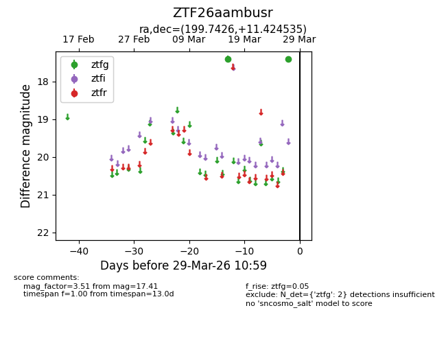
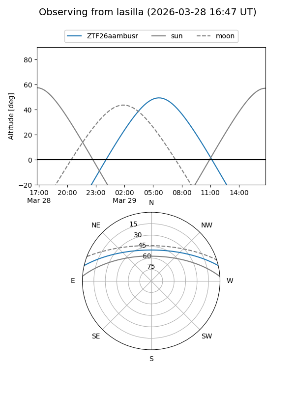
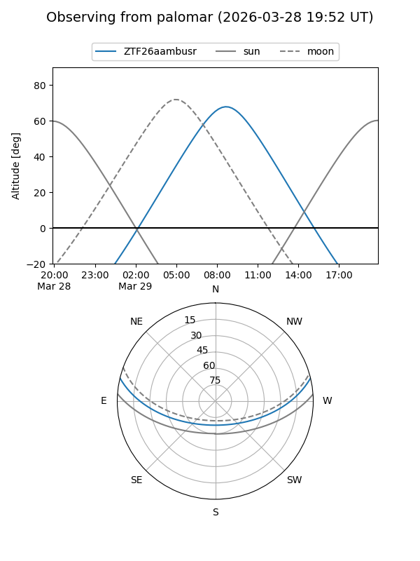

ZTF26aambusr
Target ZTF26aambusr at 2026-03-29 11:02
Aliases and brokers:
FINK: link
Lasair: link
ALeRCE: link
alt names
ZTF26aambusr (ztf,fink_ztf)
Coordinates:
equatorial (ra, dec) = 199.7426,+11.42454
equatorial (HMS+DMS) = 13:18:58.23,+11:25:28.33
galactic (l, b) = (326.6448,+73.01609)
Flags:
Photometry:
last ztfg=17.41
2 ztfg detections
Lightcurve

Visibility


Additional plots